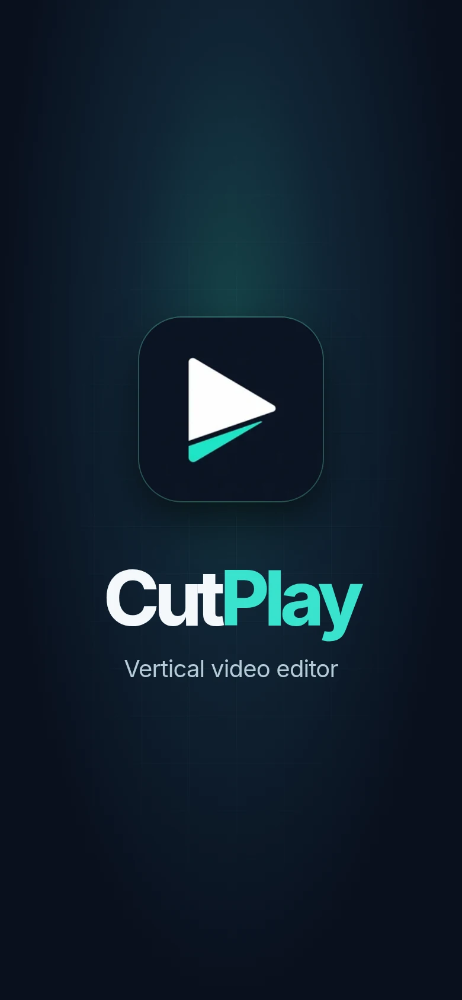
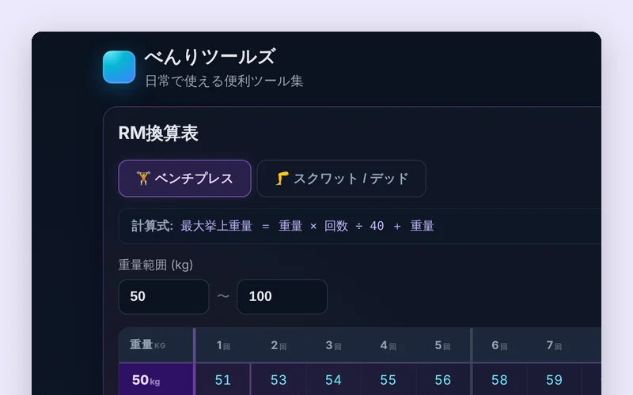
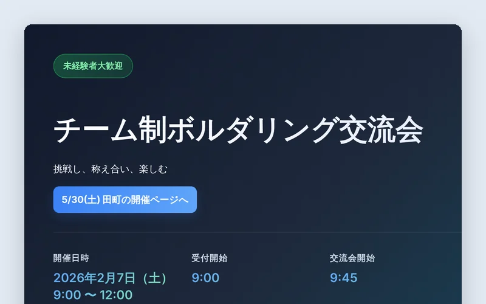

発車標 いま開けるもの
398日線 路線図 全11駅・乗換2回
本を書く
Book Line ・ B01–B02


乗換 ─ もくもく線へ
会をひらく
Meetup Line ・ M01
乗換 ─ 作品線へ
作品をつくる
Works Line ・ W01–W08
-
 CutPlay
CutPlay縦動画を、さくっと編集。スマホで撮った縦長の動画を、縦のまま手軽に編集できるiPhoneアプリ。
App Storeで見る
-
ワリカン
誰が誰にいくら払うか、すぐ分かる。立て替えを記録するだけで自動で計算。
使ってみる
-
Pumpkin
筋トレを、SNSで続ける。筋トレSNS「Pumpkin」のモバイルアプリの開発メンバー。
App Storeで見る -
べんりツールズ
RM換算や日程調整を、すぐ済ませる。
使ってみる
-
ノイズクリーナー for YouTube
YouTubeの唾の音や「えー」を抑える。
GitHubで見る
-
ボルダリング交流会
チームで登って、仲良くなる交流会の告知サイト。
サイトを開く
-
Classic Ping Pong
スピンや溜めショットで打ち合えるピンポン。
遊ぶ
-
卓球戦績メモ
試合結果を数タップで記録して、相手ごとに振り返る。
使ってみる